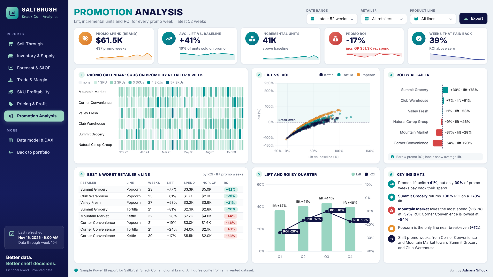

Power BI sample · Trade marketing · Promo post-event analysis
Which promotions actually paid for themselves? This report measures every promo week against a baseline built from the surrounding non-promo weeks, then shows lift, incremental units, spend and ROI by retailer, product line and season.
Saltbrush Snack Co. is a fictional brand. Every number on this page comes from an invented dataset, not from an employer or client.
Promotions lifted units +41% above baseline, but only 39% of the 437 promo weeks paid back their spend, for an overall ROI of −17%. Summit Grocery returns +30% on a +78% lift, while Mountain Market takes the most spend ($17K) at −37% and Corner Convenience is lowest at −54%. Popcorn is the only line near break-even (+1%), so the next step is moving promo weeks toward the retailers and lines that earn them back.
A star schema: one fact table with the numbers, and dimension tables for filtering. Relationships are one-to-many from each dimension to the fact table on its ID or key column.
| Table | Contents |
|---|---|
fact_retail_sales | Week × retailer × SKU scan data, with calculated columns for baseline velocity, baseline units, incremental units, promo spend and incremental gross profit |
dim_week | Week ending and fiscal week (used for the ±4-week baseline window) |
dim_product | SKU, product line, unit cost |
dim_retailer | Retailer and channel |
This is a portfolio sample built on invented data. Before using measures like these in production, I validate them against source totals and agree the definitions with the business.
-- Calculated columns on fact_retail_sales
Velocity = DIVIDE ( fact_retail_sales[Units], fact_retail_sales[StoresSelling] )
FiscalWeek = RELATED ( dim_week[FiscalWeek] )
-- Baseline: average non-promo velocity for the same retailer and SKU within 4 weeks either side.
-- ALL() over named columns (not the whole table) avoids a circular dependency.
Baseline Velocity =
VAR R = fact_retail_sales[RetailerID]
VAR S = fact_retail_sales[SKU]
VAR W = fact_retail_sales[FiscalWeek]
RETURN
IF ( fact_retail_sales[PromoFlag] = 1,
AVERAGEX (
FILTER (
ALL ( fact_retail_sales[RetailerID], fact_retail_sales[SKU], fact_retail_sales[PromoFlag],
fact_retail_sales[FiscalWeek], fact_retail_sales[Velocity] ),
fact_retail_sales[RetailerID] = R && fact_retail_sales[SKU] = S
&& fact_retail_sales[PromoFlag] = 0 && ABS ( fact_retail_sales[FiscalWeek] - W ) <= 4
),
fact_retail_sales[Velocity]
)
)
Baseline Units = IF ( fact_retail_sales[PromoFlag] = 1, fact_retail_sales[Baseline Velocity] * fact_retail_sales[StoresSelling] )
Incremental Units = IF ( fact_retail_sales[PromoFlag] = 1, fact_retail_sales[Units] - fact_retail_sales[Baseline Units] )
-- Brand funds half of the shelf discount in this sample
Promo Spend = IF ( fact_retail_sales[PromoFlag] = 1,
( fact_retail_sales[Units] * fact_retail_sales[ShelfListPrice] - fact_retail_sales[Dollars] ) * 0.5 )
Incremental GP = IF ( fact_retail_sales[PromoFlag] = 1,
fact_retail_sales[Incremental Units] * ( fact_retail_sales[ShelfListPrice] * 0.62 - RELATED ( dim_product[UnitCost] ) ) )
-- Measures
Promo Weeks = CALCULATE ( COUNTROWS ( fact_retail_sales ), fact_retail_sales[PromoFlag] = 1 )
Promo Lift % =
DIVIDE ( CALCULATE ( SUM ( fact_retail_sales[Units] ), fact_retail_sales[PromoFlag] = 1 ),
SUM ( fact_retail_sales[Baseline Units] ) ) - 1
Total Incremental Units = SUM ( fact_retail_sales[Incremental Units] )
Total Promo Spend = SUM ( fact_retail_sales[Promo Spend] )
Total Incremental GP = SUM ( fact_retail_sales[Incremental GP] )
Promo ROI = DIVIDE ( [Total Incremental GP] - [Total Promo Spend], [Total Promo Spend] )
% Promo Weeks Paid Back =
DIVIDE (
COUNTROWS ( FILTER ( fact_retail_sales,
fact_retail_sales[PromoFlag] = 1 && fact_retail_sales[Incremental GP] > fact_retail_sales[Promo Spend] ) ),
[Promo Weeks]
)Download the CSV files to rebuild this report: fact_retail_sales.csv · dim_week.csv · dim_product.csv · dim_retailer.csv, or get all sample files (.zip).